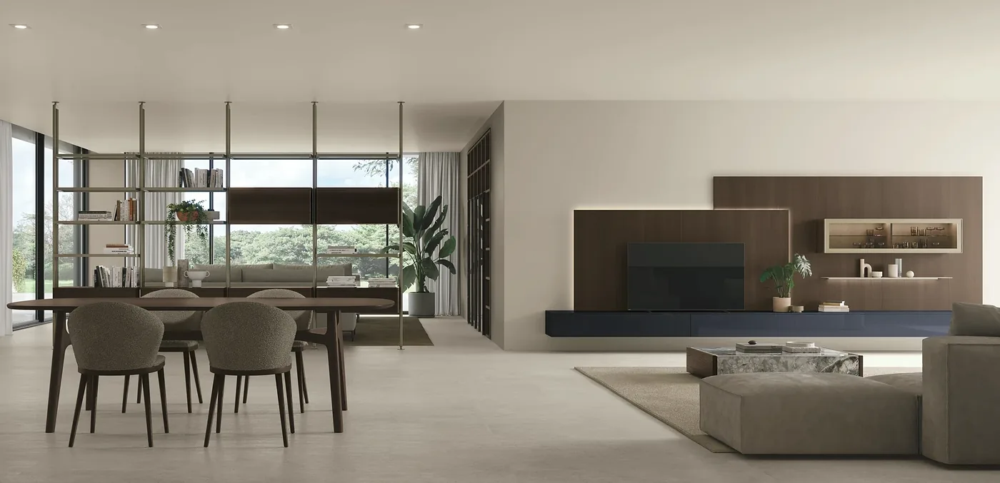
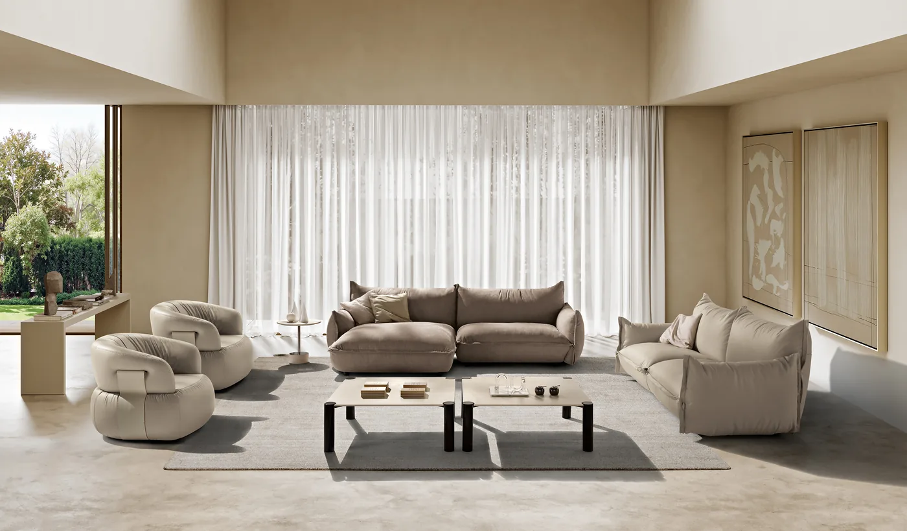
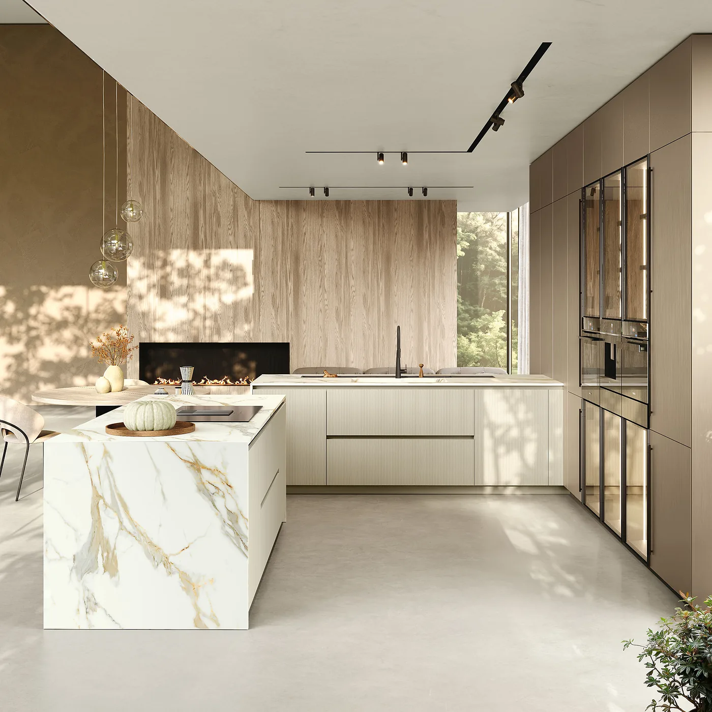
Mobilier, cuisines et sur mesure — Leval-Trahegnies, depuis 1991
Votre intérieur, de la première idée à la pose.
Du canapé à la cuisine, du mobilier de séjour aux rangements sur mesure : nous vous aidons à composer un intérieur qui vous ressemble.
- Salons, relax et literie à essayer
- Première visite et conseil offerts
- Du lundi au samedi
Les pièces
Choisissez la pièce à aménager.
Chaque pièce a ses usages, ses dimensions et ses contraintes. Découvrez les solutions que nous proposons pour la vôtre.
-
Salon
Canapés et fauteuils relax en cuir ou en tissu, à découvrir et à essayer.
-
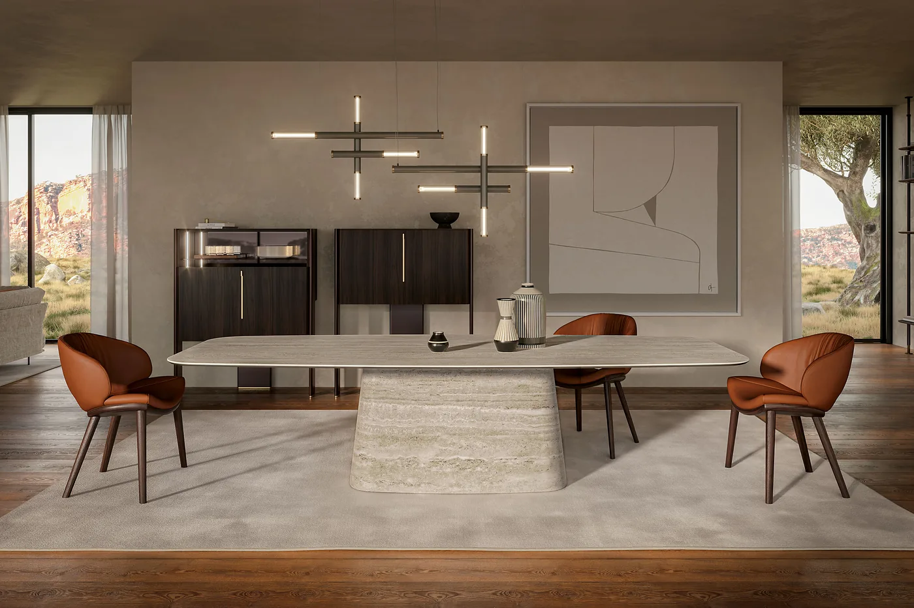
Salle à manger
Tables fixes et extensibles, en céramique ou en bois, et chaises assorties.
-
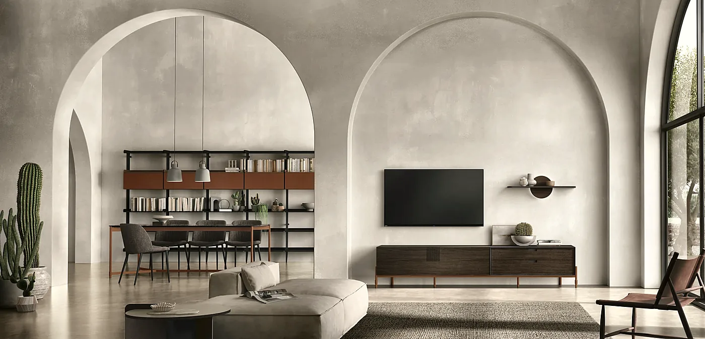
Séjour
Meubles TV, buffets et bibliothèques composés selon votre espace.
-
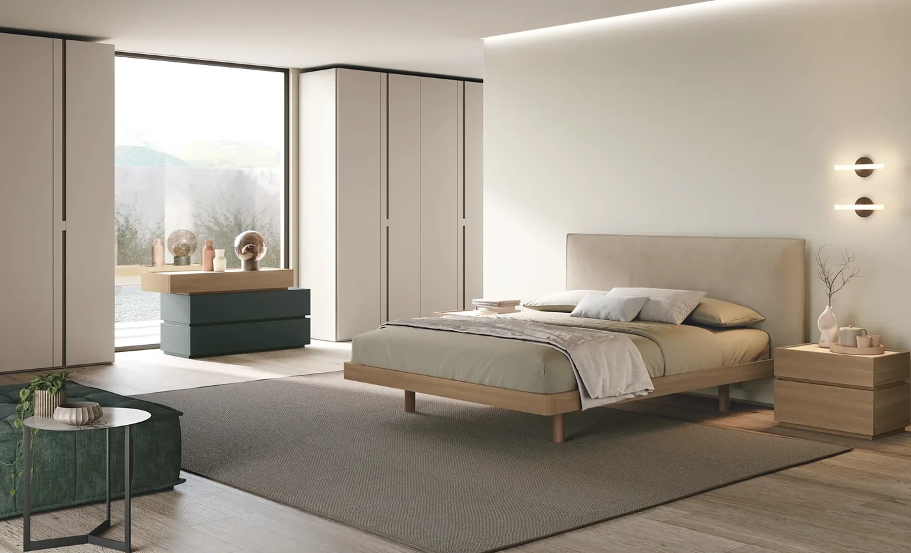
Chambre
Boxsprings belges, fixes ou électriques, matelas, lits et armoires.
-
Cuisine
Cuisines italiennes conçues avec vous, livrées et installées.
-
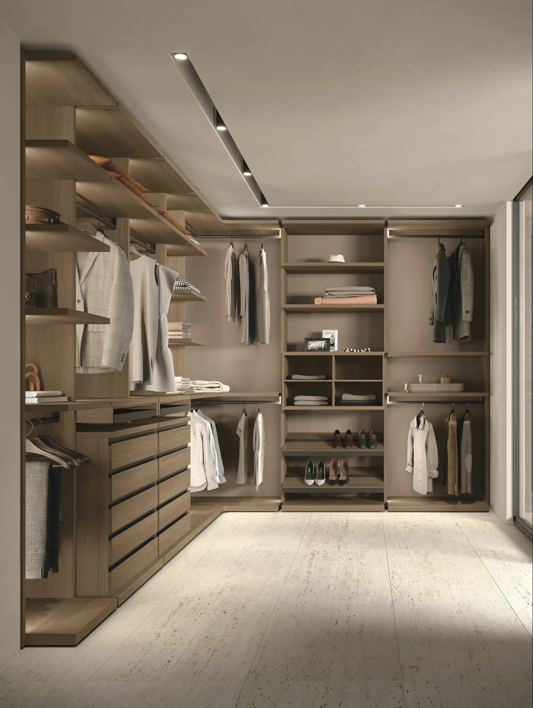
Sur mesure
Dressings, bibliothèques et rangements adaptés à votre pièce.
Selon votre projet
Des meubles pour chaque étape de votre vie.
Un premier logement, une pièce à repenser ou un intérieur à rendre plus confortable : vos besoins évoluent. Nous vous accompagnons dans vos choix, en tenant compte de votre budget.
-
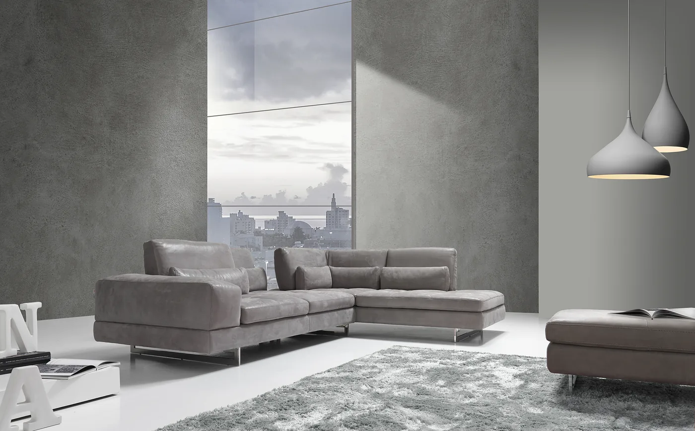
01Un premier logement
Choisir l’essentiel sans renoncer à la qualité : un canapé confortable, une table à rallonge qui accueille vos invités, une cuisine adaptée à votre espace. Nous vous aidons à trouver le bon équilibre entre usage, style et budget.
-
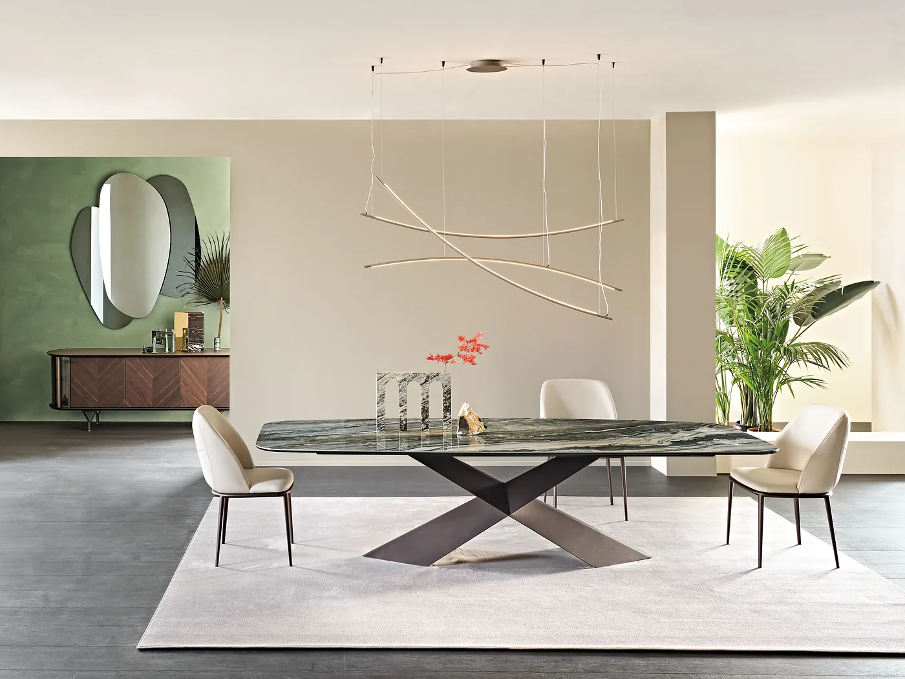
02Une maison à embellir
Renouveler un salon, accorder une salle à manger à votre séjour ou repenser une cuisine : nous composons avec vous un ensemble harmonieux, jusque dans les matières et les finitions.
-
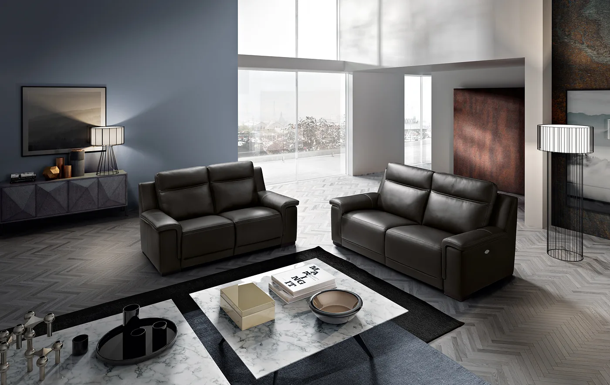
03Un intérieur plus pratique
Un canapé relax, un lit électrique, des rangements à portée de main : nous cherchons des solutions qui facilitent le quotidien, sans renoncer à l’esthétique.
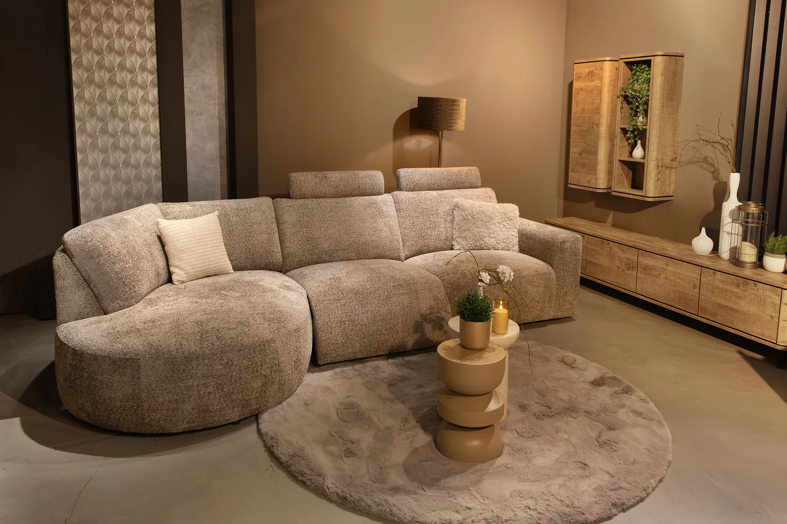
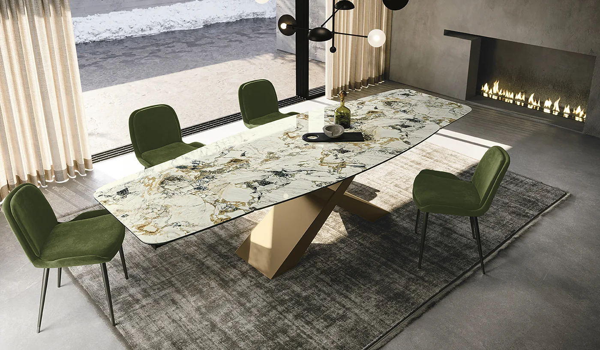
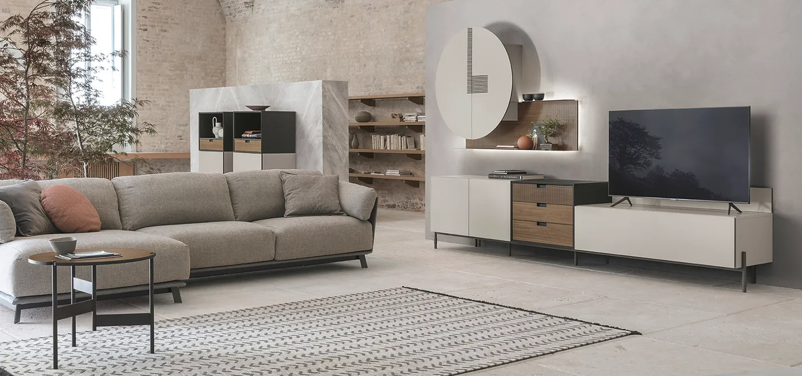
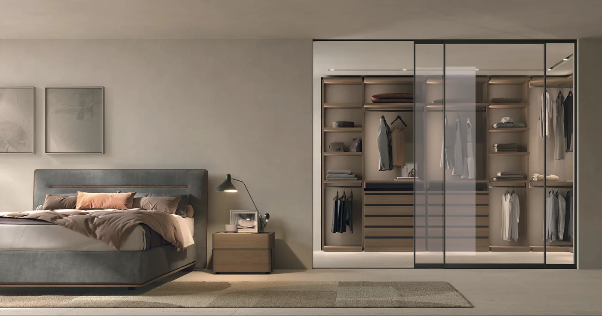
Nos fabricants
Des fabricants européens, choisis pour leur design et leur savoir-faire.
Nous sélectionnons des collections aux styles et aux finitions variés. Au magasin, nous vous aidons à comparer les matières et à accorder les meubles d’une pièce à l’autre. Certains modèles sont exposés ; d’autres se découvrent sur catalogue et se commandent dans les configurations proposées par nos fabricants.
Les fabricants que vous trouverez au magasin
- Max DivaniSalons
- NicolettiLe relax à trois moteurs
- TomasellaSéjour et chambre
- StosaCuisines italiennes
- VeldaLiterie de fabrication belge
- Van LandschootBoxsprings Axelsson, fabrication belge
- PolypreenMatelas, sommiers et boxsprings, fabrication belge
- Cattelan ItaliaTables en céramique
- SeditTables en céramique ou en bois
- AkanteTables à rallonge
- MovisTable, chaises et buffet, la pièce entière
- ModulaxChaises et tabourets de bar
Notre méthode
Un seul interlocuteur, du premier croquis à la pose.
Votre conseiller suit votre projet à chaque étape.
-
01
Écoute
Au magasin ou chez vous, nous prenons le temps de comprendre vos habitudes, vos envies et les contraintes de votre pièce.
-
02
Mesures
Nous relevons les dimensions et les particularités de l’espace : murs, pentes, prises et plinthes. La première visite est offerte.
-
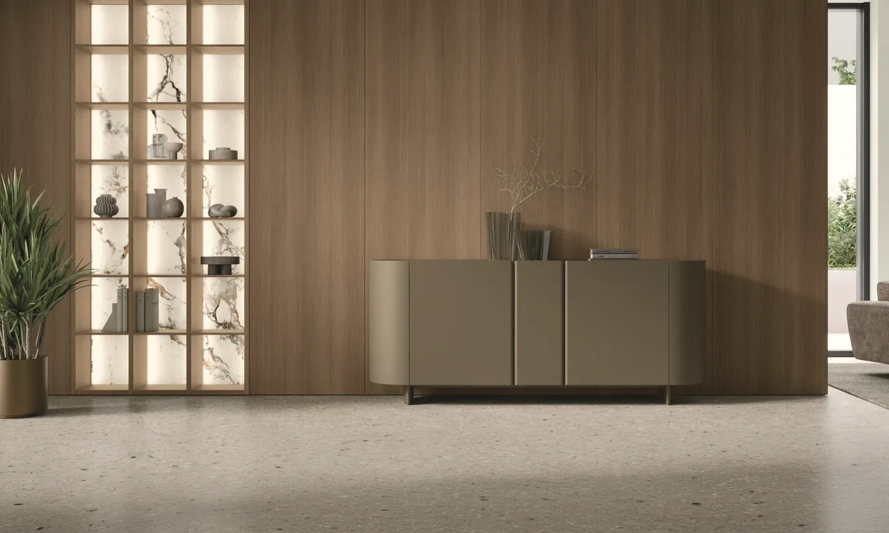
03Plan
Nous définissons ensemble l’implantation, les matières, les teintes et les finitions, échantillons en main.
-
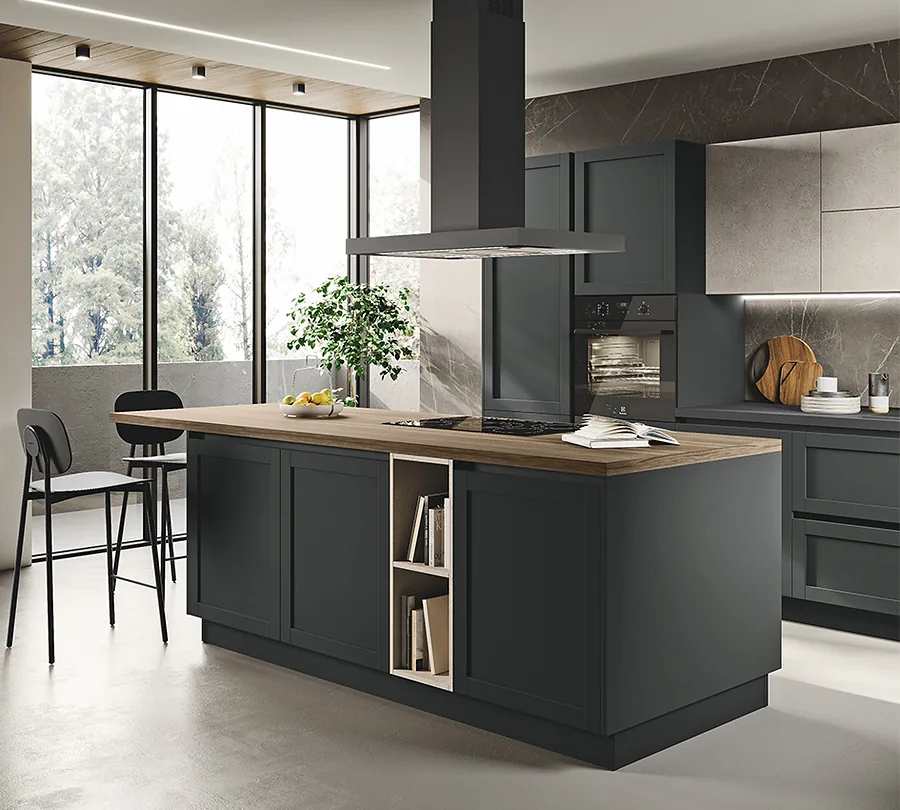
04Livraison et pose
Nous livrons vos meubles par nos soins. Selon le projet, la pose est réalisée par notre équipe ou par un professionnel partenaire. Nous restons à votre disposition après l’installation.
Avis clients
Ce que nos clients en disent.
« […] Patron à l’écoute… La livraison et l’installation au top ! Ne pousse pas à l’achat mais vous conseille dans un showroom varié à l’atmosphère sereine… »
Mirco P. · avis Google
« L’accueil du patron comme de ses fils est parfait. Le service est top. Les conseils sont très clairs. Je reviendrai »
Françoise D. · avis Google
« Parfait, bons conseils, délais respectés, livreurs efficaces, rapides pros. »
Chantal F. · avis Google
Parlons de votre intérieur.
Retrouvez-nous à Leval-Trahegnies, entre Binche et La Louvière, du lundi au samedi. Venez découvrir nos collections, essayer nos meubles ou préparer votre projet avec un conseiller. Vous êtes les bienvenus sans rendez-vous. Parking facile d’accès.
- Lundi
- 13h30 – 18h30
- Mardi au samedi
- 10h30 – 18h30
- Dimanche
- Fermé
- Téléphone
- 064 46 07 72
- Livraison
- Par nos soins, dans le Hainaut (Binche, La Louvière, Mons, Charleroi…) et la province de Namur
Pour un projet plus loin, ailleurs en Belgique ou à l’étranger : parlons-en.